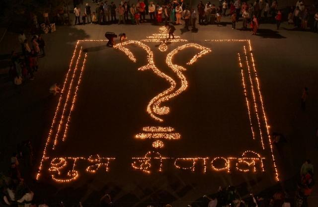

Diwali

Diwali is regarded as one of the most important festival of the Hindu calendar. It is celebrated across the nation with great pomp and excitement. The festival is mainly associated with lights as it is called the festival of light. On the day of the festival diyas (small clay lamps) are lit in everybody's home irrespective of their social status. The name Diwali signifies 'rows of lighted lamps'. Diwali is a five-day festival, beginning on the 15th day of the Hindu calendar month of Kartika (Ashwin). By the Gregorian calendar, Diwali falls in October or November. Diwali marks the beginning of the Hindu and Gujarati New Year and is celebrated with the lighting of lamps and candles, and lots of fireworks. People decorate their home with beautiful diyas and making rangoli pattern in the courtyard and in front of the gate. They put flowers and mango leaves on their doors and windows. Diyas and candles are placed on rooftops, rooms, and kitchen and even in the bathrooms. On this day, people worship Lord Ganesha, the foremost of all Hindu Gods and Goddess Lakshmi, the Goddess of Wealth and Prosperity. It is time to exchange gifts and sweets with friends, relatives and neighbors.
Due to India's varied cultural diversity there are many manifestations of the Diwali festival. The festival begins with Dhanteras, a day set aside to worship the goddess of prosperity, Goddess Lakshmi. On this day, homes are cleaned and paintings are done. There are various legends associated with the celebration of Diwali. But people mostly associate the celebration with the legend of Lord Ram returning to his kingdom of Ayodhya after fourteen years of exile and defeating Ravana, the demon king. In Bengal, the celebration is marked with the worship of Goddess Kali. People celebrate Kali puja with great fervor and enthusiasm. Joy and festivity reins every corner of the nation during the Diwali season. Diwali festival is the one Hindu festival that unites the whole of India. The exchange of sweets and the explosion of fireworks customarily accompany the celebration of the festival. Diwali is an occasion for cheerfulness and togetherness. This is that time of the year when people of all age and all class take part in its celebration.